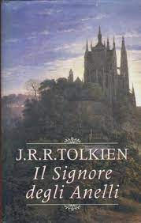
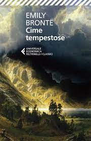
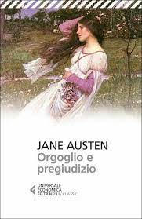
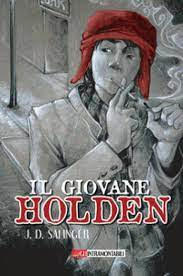

La Terra è divisa in tre enormi continenti: Oceania,Eurasia ed Estasia. I cittadini dell'Oceania devono sottostare ai principi del Socing, l'ideologia dominante nel super stato fondata su leggi rigide e incontrastabili. Il comandante supremo è il Grande Fratello,un dittatore misterioso che nessuno ha mai visto.

Il Signore degli Anelli narra della missione di nove personaggi che compongono la Compagnia dell'Anello, partiti per distruggere il più potente Anello del Potere, un'arma che potrebbe rendere invincibile il suo malvagio creatore Sauron se tornasse nelle sue mani, dandogli il potere di dominare tutta la Terra di Mezzo.

"Cime Tempestose" narra la tormentata storia d'amore tra Catherine Earnshaw e Heathcliff nelle brughiere dello Yorkshire nel XVIII secolo. Catherine sposa un uomo diverso, scatenando gelosia e vendetta in Heathcliff. La trama segue le loro vicende e quelle delle loro famiglie, esplorando temi di amore, vendetta e redenzione in un ambiente selvaggio e tormentato.

"Orgoglio e Pregiudizio" di Jane Austen narra la storia della famiglia Bennet, in particolare delle figlie Elizabeth e Jane, durante l'Inghilterra della fine del XVIII secolo. La trama si concentra sulle relazioni tra le sorelle Bennet e vari potenziali pretendenti, in particolare il ricco e aristocratico Mr. Darcy e il cordiale e affascinante Mr. Bingley.

"Il giovane Holden" di J.D. Salinger racconta la storia di Holden Caulfield, un giovane adolescente problematico che narra le sue avventure e le sue riflessioni mentre si trova in un periodo di transizione tra l'adolescenza e l'età adulta. Dopo essere stato espulso da diverse scuole preparatorie, Holden trascorre alcuni giorni a New York City, incontrando una serie di personaggi eccentrici e affrontando le proprie sfide emotive.
"Moby Dick" di Herman Melville è un romanzo che narra le avventure di Ishmael, un giovane marinaio, a bordo della baleniera Pequod, comandata dal capitano Ahab. La storia si concentra sulla ricerca ossessiva di Ahab per vendicare la perdita della sua gamba, causata dall'attacco di una balena bianca gigantesca chiamata Moby Dick.